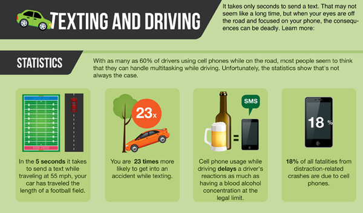

Reports from the National Safety Council states that 1.6 million traffic incidents are caused by cell phone usage while driving. And to add to that, almost 330,000 injuries are from texting and driving. Another frightening fact coming from the 'Insititue for Hwy Safety Fatality Facts' is that there is 11 teen deaths cause by texting and driving every single day
According to the CDC in 2013, two out of five students who were behind the wheel in the past month has sent a text or email while driving. One risk that is far more dangerous than getting into a crash is setting that example to the influential minds that might be in your vehicle. Setting an example to those around you is important, because if they see you doing it they might think it's okay and the cycle will repeat.
Anybody can make a difference, change is change, whether it was big or small. You can start by being cautious about what distracts you while your driving. You can also stop other people from doing it, and inform them about the dangers A big way is too download our TTYL. We created a safe an easy way for you to not be distracted while driving.